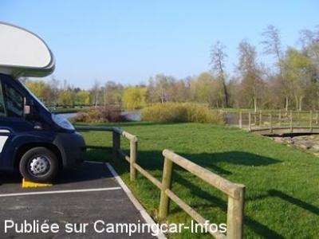

ASN = Aire de services avec stationnement nuit possible de :
LA POITEVINIÈRE
(N° 689)
Accès/adresse :
Rue Perdriau
Place de la Fontaine
49510 LA POITEVINIÈRE
Place de la Fontaine
49510 LA POITEVINIÈRE
Latitude : (Nord) 47.22744° Décimaux ou 47° 13′ 38′′
Longitude : (Ouest) -0.89595° Décimaux ou 0° 53′ 45′′
Tarif : Gratuit
Type de borne : EURO-RELAIS
Services :


Commerces
Autres informations :
Ouverte toute l'année
4 emplacements
Tel : + 33(0)241 700 519

Le 05/01/2012 par Garibaldi II
de
gore denis
le 31/05/2012 :
de retour sur cet aire de stationnement le 28/05/2012
toujours aussi calme
eau et electricite gratuite
jeton a disposition mairie
restaurant proche
wc public
bon acceuil des habitants le plan d'eau proche étant
un lieu de promenade
de retour sur cet aire de stationnement le 28/05/2012
toujours aussi calme
eau et electricite gratuite
jeton a disposition mairie
restaurant proche
wc public
bon acceuil des habitants le plan d'eau proche étant
un lieu de promenade
de
buffetrille Jean-luc
le 06/09/2011 :
Bonjour
L'aire située entre l'église et le café de la commune est un parking auto standard, il n'y à pas de place spécifique pour camping-car. Sinon cadre à l'arrière du parking très agréable. Que des voitures lors de mon bref passage!
Bonjour
L'aire située entre l'église et le café de la commune est un parking auto standard, il n'y à pas de place spécifique pour camping-car. Sinon cadre à l'arrière du parking très agréable. Que des voitures lors de mon bref passage!
de
gore denis
le 13/03/2011 :
le 10 mars 2011
tres bien .bon voisinage.tres propre.electricite gratuite.quant aux cloches elles font partie du decor.
le 10 mars 2011
tres bien .bon voisinage.tres propre.electricite gratuite.quant aux cloches elles font partie du decor.
de
J-C PAQUIET
le 02/07/2002 :
En fin d'après midi, nous avons stationné sur l'aire de La Poitevinière située à 50 m de l'église, dans l'intention d'y passer la nuit. A minuit, nous avons dû quitter les lieux en raison des cloches. Sinon le cadre est idéal.
En fin d'après midi, nous avons stationné sur l'aire de La Poitevinière située à 50 m de l'église, dans l'intention d'y passer la nuit. A minuit, nous avons dû quitter les lieux en raison des cloches. Sinon le cadre est idéal.